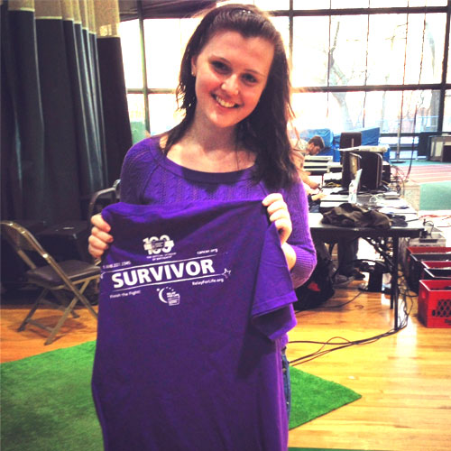
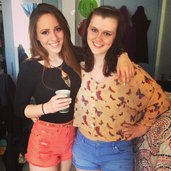

Osteosarcoma
Ryann Wenke

I met Ryann Wenke first semester of freshmen year and since then I have learned more about putting things in perspective than I’ve ever learned from anyone before. At first glance you would have no idea she has survived cancer (twice). She goes through her days as a normal college student would but looming behind her are her years spent in hospital beds, her treatment, and her surgeries. As a normal freshmen in high school she began to feel pain in her left knee. After a few doctor visits, imaging tests, and a biopsy it was confirmed on May 8th, 2008 that she had osteosarcoma. She put her entire life on hold for nine months and began treatment at Mt. Sinai right away. Throughout these nine months she experienced the worst pain of her life, lost all her hair because of the chemotherapy and almost lost her leg. Her eight hour surgery to take the tumor out of her knee was successful, but she had months of physical therapy ahead of her so she could walk again. Her surgeon completely replaced her knee with an internal metal prostethic to save her leg from amputation. Ryann and her friends and family thought she had completely fought her cancer until she was diagnosed again in September of 2010. As seen with many patients, the osteosarcoma cells metastasized in her lungs as a nodule and she needed treatment again before it became an actual tumor. Five months more of chemotherapy and she was finally cancer free again.
While regular high school seniors were trying to apply to colleges, take SATs, and worry about who their prom dates were going to be, Ryann was fighting cancer for the second time. Looking back at my high school days I could never imagine fighting against what she did. My biggest worries back then were my best friend bought the same color prom dress as me and my series of less than great relationships with less than great boyfriends. We all hear this too often, but things could really be so much worse. I admire Ryann in every single aspect. Her courage and bravery while fighting off cancer, the courage she had while having to wear a wig, and the courage she had to move on with her lift. That part of her life is behind her and that’s how she intends it to always stay. Even now, when I feel like I’m having an awful day and I just want to curl up in bed and never leave, I think of how completely lucky I am to have even been able to have a bad day. Potentially, Ryann could have never seen a bad day again, or any day for that matter. Feeling lucky just to be alive is one of the best feelings and Ryann has put that into perspective for me. I wish I could thank her a hundred times over, but I’ll never be able to express in words my gratitude for what she has taught me. If Ryann and the hundreds of thousands of other cancer survivors don’t motivate you to have courage, I’m not sure what will
